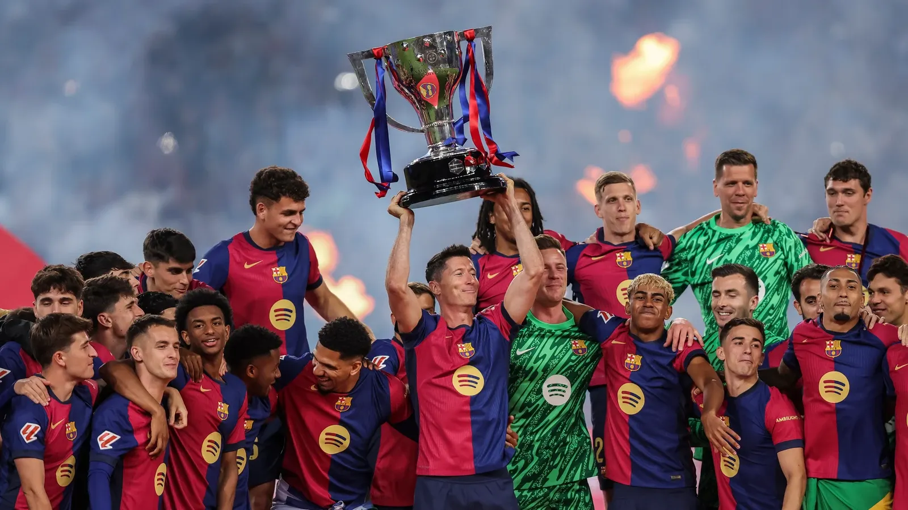
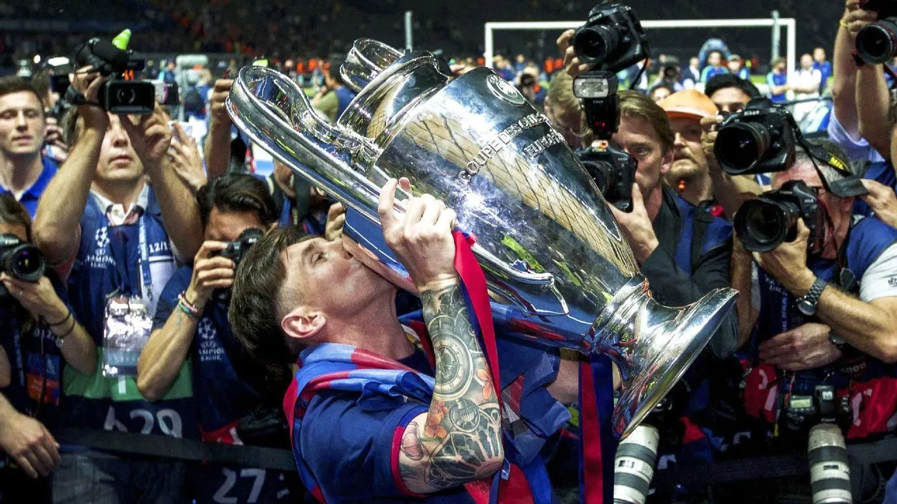
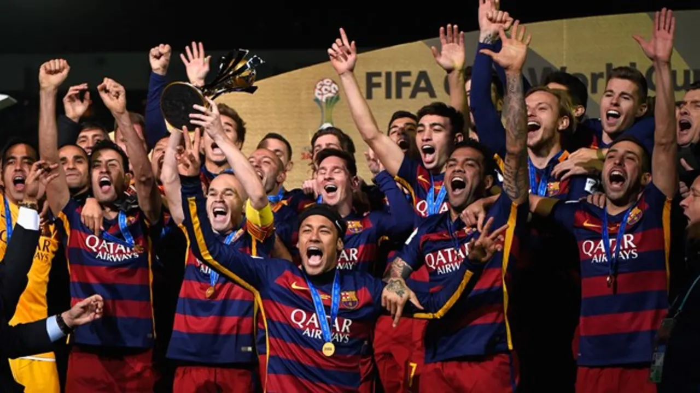
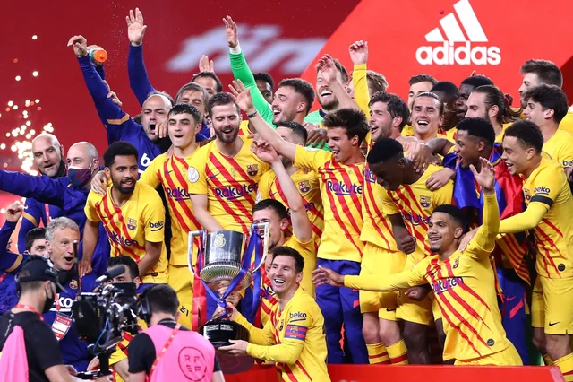

FC Barcelona Trophies
La Liga
FC Barcelona has won 28 La Liga titles, showing incredible consistency and excellence over the years. From the legendary Kubala era to Messi's dominance, the club has always represented creative and attacking football.
UEFA Champions League
With 5 Champions League trophies, Barcelona has left a strong mark on European football. The victories in 1992, 2006, 2009, 2011, and 2015 showcased the club’s unique playing style based on teamwork and ball possession.
FIFA Club World Cup
Barça has been crowned world champion three times in the FIFA Club World Cup, proving its strength beyond Europe. These titles confirm its reputation as one of the greatest football clubs in the world.
Copa del Rey
Barcelona holds a record of 32 Copa del Rey titles, more than any other Spanish club. This competition reflects the team’s passion, creativity, and close bond with its fans throughout the country.
